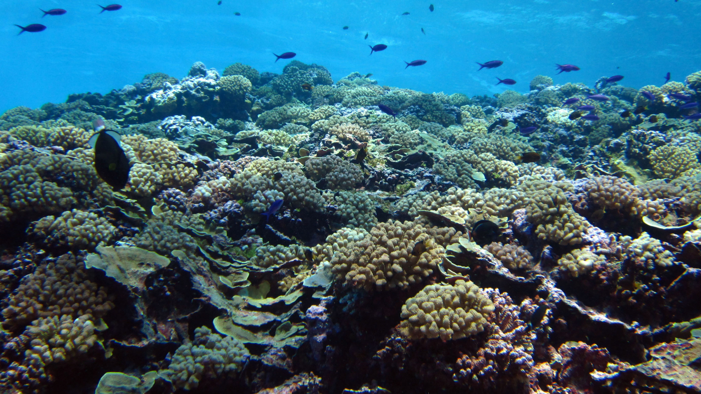
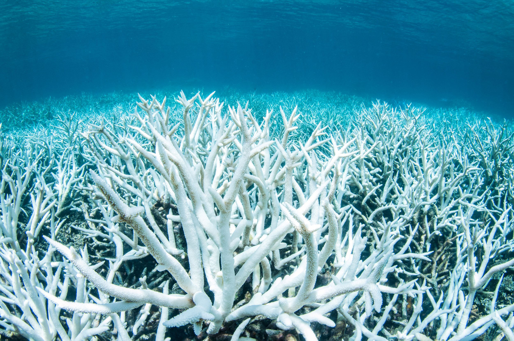

These vibrant ecosystems, predominantly found in warm, clear waters, are teeming with an astonishing variety of life. Within the intricate nooks and crannies of coral formations, one can find an array of marine species, including countless species of fish, mollusks, crustaceans, and sponges, each adapted to their unique niche within this underwater realm. Moreover, coral reefs are essential breeding and feeding grounds for numerous marine organisms, from the iconic clownfish sheltering among the anemones to the majestic sea turtles gliding through the crystal waters.

At the heart of coral reefs are the corals themselves, which are actually colonies of tiny animals called
polyps that
secrete calcium carbonate skeletons, forming the intricate structures that provide shelter and support for
countless
marine species.
These ecosystems are not only vital breeding and feeding grounds but also act as natural barriers,
protecting coastlines
from erosion and the devastating force of ocean waves.
Coral reefs are nature's kaleidoscopic masterpiece, a breathtaking display of colors, shapes, and life beneath the ocean's surface. As sunlight filters through the crystalline waters, it dances upon the intricate, calcium carbonate structures created by coral polyps, painting the underwater landscape with a vivid spectrum of reds, blues, and greens. These vibrant hues provide a stunning backdrop to an enchanting cast of characters that call the reef home.
